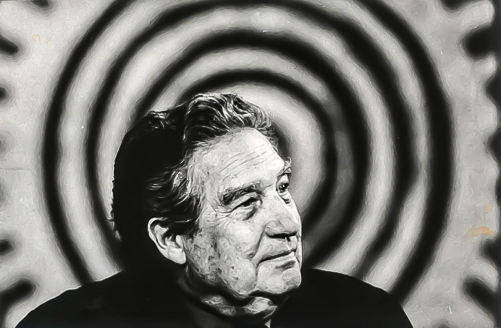

Poesía
5 poemas de Octavio Paz
07 Dic 2017/ OCTAVIO PAZ/ Octavio Paz, poesía

Poeta y ensayista mexicano, recibió el Premio Nobel de literatura en 1990 como reconocimiento a su obra literaria. Aquí te ofrecemos 5 poemas de Octavio Paz.
Decir, hacer
A Roman Jakobson
Entre lo que veo y digo,
Entre lo que digo y callo,
Entre lo que callo y sueño,
Entre lo que sueño y olvido
La poesía.
Se desliza entre el sí y el no:
dice
lo que callo,
calla
lo que digo,
sueña
lo que olvido.
No es un decir:
es un hacer.
Es un hacer
que es un decir.
La poesía
se dice y se oye:
es real.
Y apenas digo
es real,
se disipa.
¿Así es más real?
Idea palpable,
palabra
impalpable:
la poesía
va y viene
entre lo que es
y lo que no es.
Teje reflejos
y los desteje.
La poesía
siembra ojos en las páginas
siembra palabras en los ojos.
Los ojos hablan
las palabras miran,
las miradas piensan.
Oír
los pensamientos,
ver
lo que decimos
tocar
el cuerpo
de la idea.
Los ojos
se cierran
Las palabras se abren.
Decir, hacer
Es una calle larga y silenciosa.
Ando en tinieblas y tropiezo y caigo
y me levanto y piso con pies ciegos
las piedras mudas y las hojas secas
y alguien detrás de mí también las pisa:
si me detengo, se detiene;
si corro, corre. Vuelvo el rostro: nadie.
Todo está oscuro y sin salida,
y doy vueltas en esquinas
que dan siempre a la calle
donde nadie me espera ni me sigue,
donde yo sigo a un hombre que tropieza
y se levanta y dice al verme: nadie.
Las palabras
Dales la vuelta,
cógelas del rabo (chillen, putas),
azótalas,
dales azúcar en la boca a las rejegas,
ínflalas, globos, pínchalas,
sórbeles sangre y tuétanos,
sécalas,
cápalas,
písalas, gallo galante,
tuérceles el gaznate, cocinero,
desplúmalas,
destrípalas, toro,
buey, arrástralas,
hazlas, poeta,
haz que se traguen todas sus palabras.
Libertad bajo palabra
Viento
Cantan las hojas,
bailan las peras en el peral;
gira la rosa,
rosa del viento, no del rosal.
Nubes y nubes
flotan dormidas, algas del aire;
todo el espacio
gira con ellas, fuerza de nadie.
Todo es espacio;
vibra la vara de la amapola
y una desnuda
vuela en el viento lomo de ola.
Nada soy yo,
cuerpo que flota, luz, oleaje;
todo es del viento
y el viento es aire
siempre de viaje…
Silencio
Así como del fondo de la música
brota una nota
que mientras vibra crece y se adelgaza
hasta que en otra música enmudece,
brota del fondo del silencio
otro silencio, aguda torre, espada,
y sube y crece y nos suspende
y mientras sube caen
recuerdos, esperanzas,
las pequeñas mentiras y las grandes,
y queremos gritar y en la garganta
se desvanece el grito:
desembocamos al silencio
en donde los silencios enmudecen.